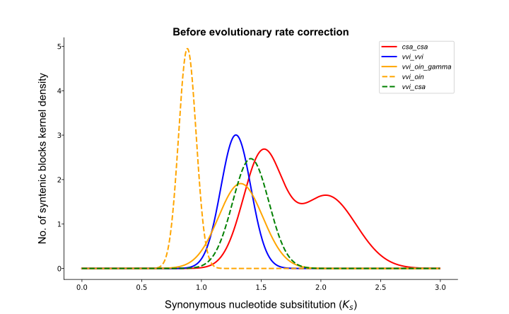

KsFigure¶
A simple way to draw ks distribution map.
Parameters
Parameters |
Standards and instructions |
ksfit |
Type: file | Default: .csv Output result of parameter kp or filtered. |
labelfontsize |
Type: float | Default: 15 Different processing methods of ks value on collinearity block. |
legendfontsize |
Type: float | Default: 15 The fontsize of legend in the plot. |
xlabel |
Type: str | Default: none The xlabel of figure. |
ylabel |
Type: str | Default: none The ylabel of figure. |
title |
Type: str | Default: none The title of figure. |
area |
Type: str Default: 0,3 Show the range of ks. |
shadow |
Type: bool Default: true Whether or not the plotted curve is shown with shadows. |
figsize |
Type: int,int | Default: 10,10 Control the proportion of the size of the saved picture. |
savefig |
Type: {*. png,*. pdf, *. svg} | Default: *. png Save pictures support png, pdf, svg formats. |
Use command to enter the folder wgdi -kf ? >> total.conf Take out the parameter file.
[ksfigure]
ksfit = ksfit result(*.csv)
labelfontsize = 15
legendfontsize = 15
xlabel = none
ylabel = none
title = none
area = 0,2
figsize = 10,6.18
shadow = (true/false)
savefig = save image
Quick start
After the parameters are modified properly, then run wgdi -kf total.conf
Example
The original results are easily accessible at wgdi-example
